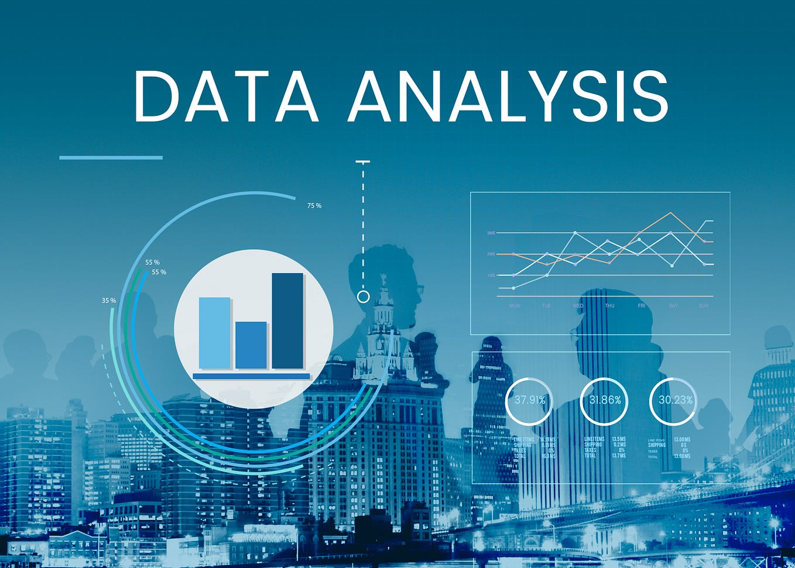

About Me
Hello! I'm Jialin You, a passionate Data Engineer and Analytics
Engineer. I specialize in building robust data pipelines, optimizing data storage, and
enabling data-driven decision-making. Currently pursuing a Master of Science in Business Analytics
at UCLA Anderson, I combine strong technical expertise with business acumen.
Technical Skills
- Languages: Python, SQL, Java
- Cloud & Infrastructure: AWS, Azure, GCP, Databricks, Snowflake
- Data Engineering: Apache Spark, Airflow, dbt, Azure Data Factory, ETL/ELT
- Visualization: Tableau, Power BI
My professional experience includes roles at Data-Sleek and Global Music
Rights, where I designed and maintained scalable ETL pipelines, automated data
workflows using Airflow and Azure Data Factory, and developed interactive dashboards. I thrive on
solving complex data challenges and architecting solutions that turn data into a strategic asset.
Check out my projects to see my work in action!
Projects

Tech Stack: Python, Keras, GridSearchCV
Developed a Neural Network model to forecast credit card default payments. Optimized
hyperparameters using GridSearchCV, achieving a 12% improvement in
accuracy. This project highlights my ability to build and deploy machine
learning models for financial risk assessment.
Tech Stack: SQL (Advanced)
Designed and executed complex SQL scripts to clean and standardize raw datasets from diverse
sources. This project demonstrates mastery in data preprocessing, ensuring high data quality
and consistency for downstream analysis.

Tech Stack: SQL, Data Visualization
Performed exploratory data analysis (EDA) on complex datasets using advanced SQL queries.
Extracted actionable insights and prepared data marts for reporting, showcasing the ability
to bridge raw data and business intelligence.

Tech Stack: Python, Pandas, APIs
Built an end-to-end data pipeline collecting COVID-19 data from public APIs. Performed data
cleaning and transformation using Pandas, followed by exploratory analysis to uncover trends
across different industries.

Tech Stack: Python, Pandas, Seaborn, Matplotlib
Conducted a comprehensive correlation analysis on a movie dataset. Utilized Python libraries
for data manipulation and visualization to identify key factors influencing movie success.
<
>
Dashboards

Tech Stack: Tableau, SQL
Interactive dashboard visualizing rental performance metrics including daily trends, film
categories, and revenue analysis. Enables stakeholders to identify top-performing assets and
optimize inventory.

Tech Stack: Tableau, SQL
Comprehensive customer analysis dashboard focusing on segmentation and behavioral patterns.
Provides actionable insights for targeted marketing strategies and customer retention.
<
>
Contact